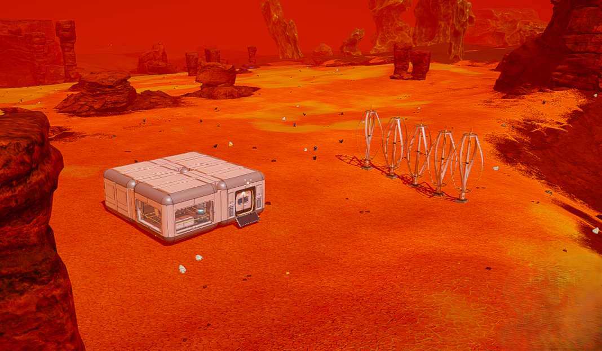
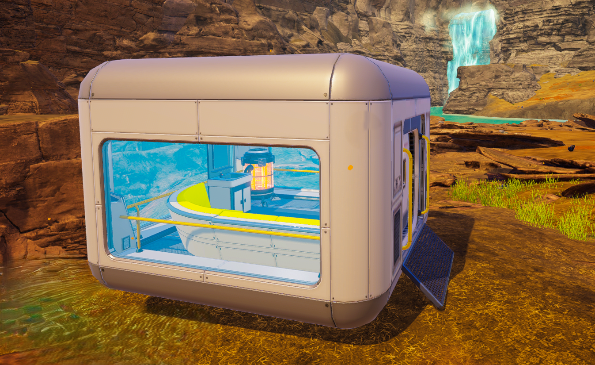
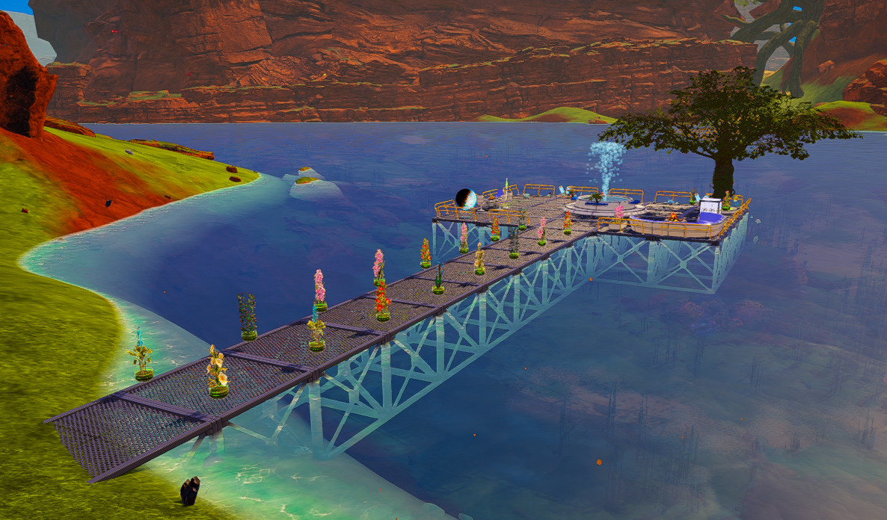
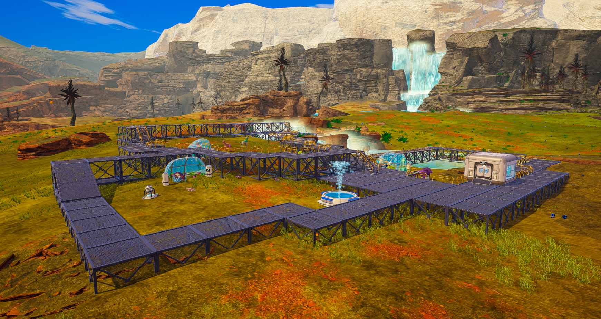
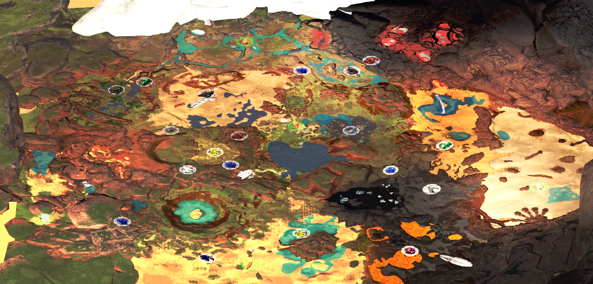

Key Features
Interactive Base Planner
Build custom structure checklists and calculate raw material requirements, power grid consumption, and terraformation outputs in real time.
Build Blueprints Catalog
Browse pre-designed base structures, lounges, and wildlife sanctuaries and load them directly into your Planner with 1 tap.
Crafting & Station Guides
Explore multi-tier production chains with expandable ingredient trees (`▶`) and specialized guides for Genetic Extractors & Synthesizers.
Metric SI Unlock Scale
View item unlock requirements formatted in clean metric SI scales (`Ti`, `GTi`, `SysTi`, `OcdSysTi`, `kW/s`).
Satellite Maps
Pan and pinch-zoom through high-resolution satellite terrain maps for Planet Prime, Selena Moon, and DLC worlds.
Master Strategy Guides
Author Greg Nason's Early, Mid, and Endgame Guides covering 3×3 Auto Crafter matrices, the 3-Trip Policy, and 6-world interplanetary expansion.
Build Blueprints & Satellite Maps
Explore prebuilt structures and satellite maps included in the companion.

Beginning Base
Starter habitat with wind power, storage crates, and monitoring screens.

Simple Sauna
Cozy timber & glass sauna featuring smart couches and a glass ceiling.

Waterfront Retreat
Lakeside boardwalk retreat with fish farms, fountains, and fireplace lounge.

Primal Doorly Zoo
Expansive wildlife sanctuary featuring fenced habitats, shelters, and automated feeders.

Planet Prime Satellite Map
High-resolution 2D satellite terrain map with pan and pinch-zoom gesture support.
Support & Feedback
Have questions, suggestions, or bug reports? We'd love to hear from you!
Developer Email: rizeabovedataworks@gmail.com
Support Email: support@rizeabovedataworks.com
Discord Community: Join the Community